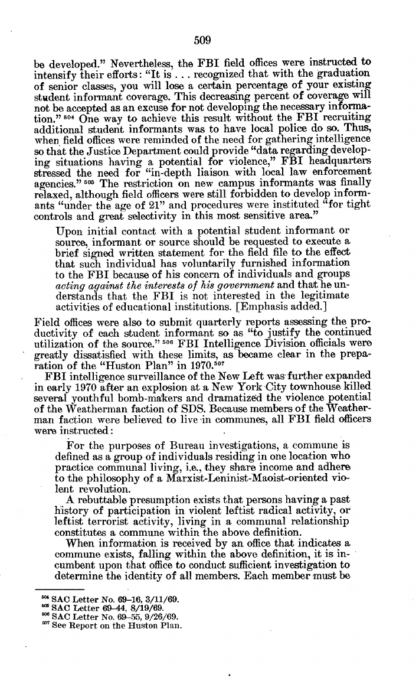
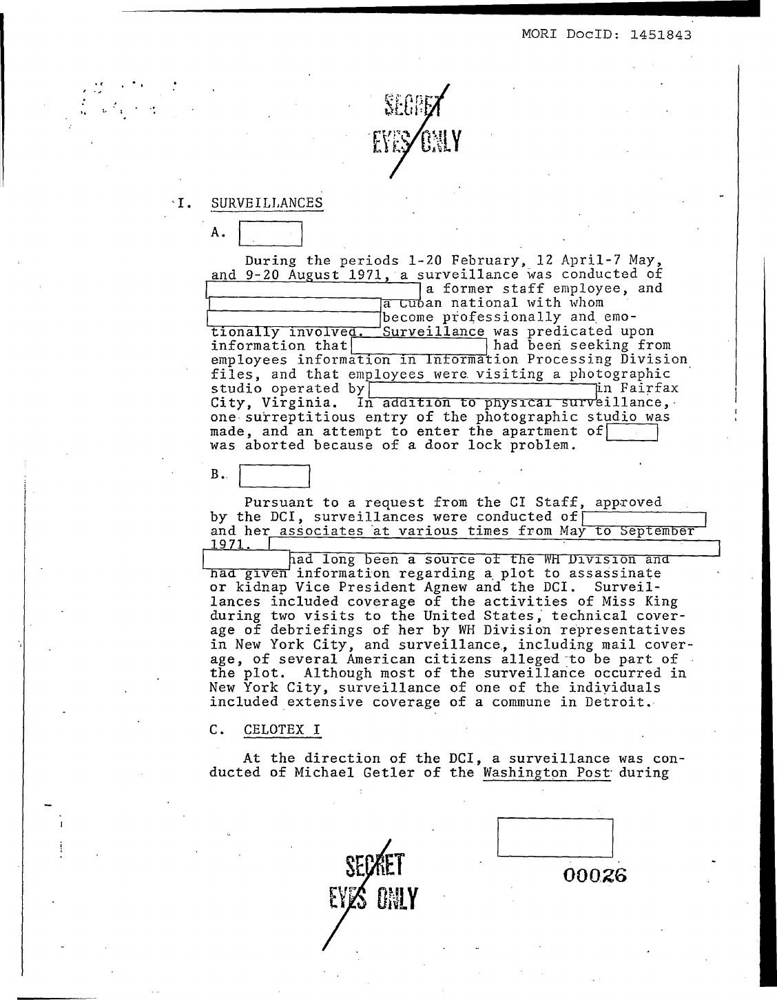
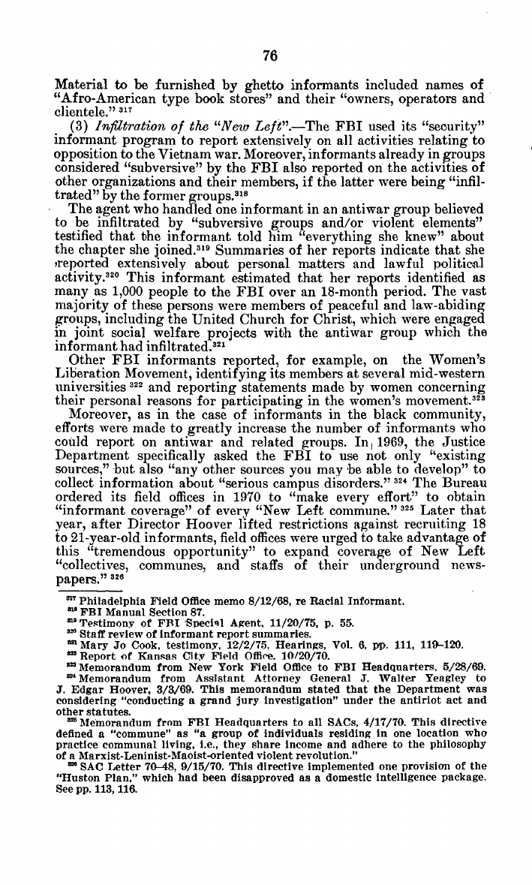
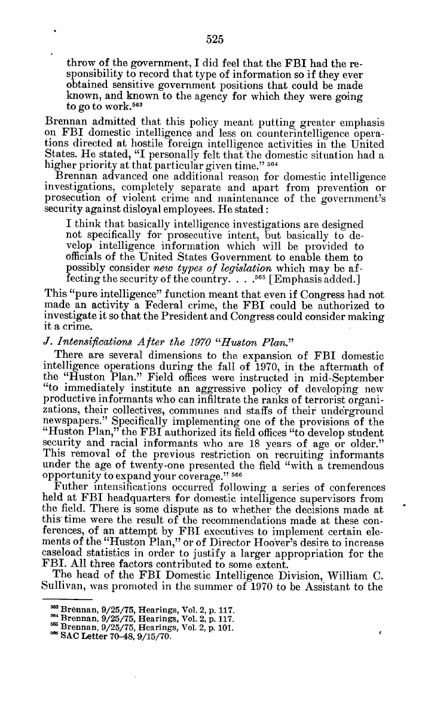
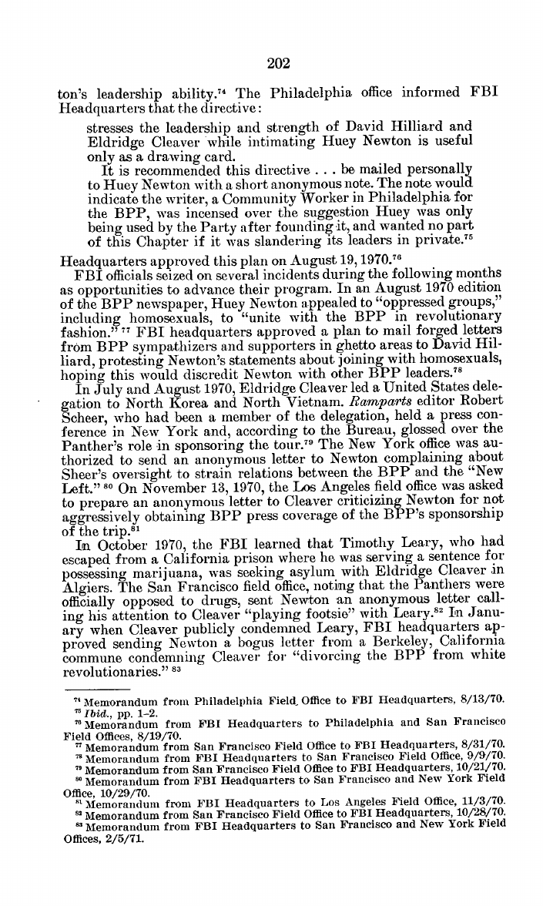
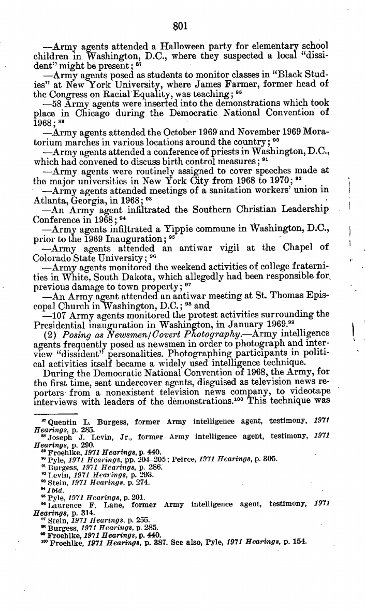
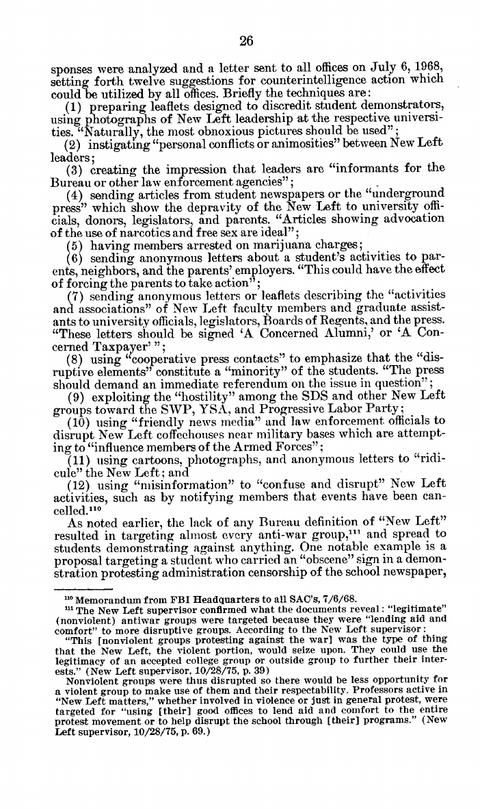
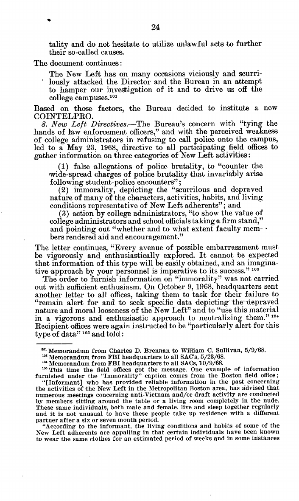

The form is alive. The slander was policy. The opening is now.
Session 4 · Design an Agrarian Industrial Commune
The Convent · Greenpoint, Brooklyn
Scan to open these slides on your phone
ronturetzky.github.io/communes-that-work
Three claims, in order
1 · The form works
Income-sharing communities exist today with 59-year, 105-year, and 498-year track records.
The question was never whether communal living is viable — it is which structures make it durable. Twin Oaks, the Bruderhof, the Hutterites are the existence proof.
2 · The reputation was manufactured
Declassified FBI and CIA files show deliberate campaigns to infiltrate and discredit communes.
Including a 1970 FBI directive ordering informant coverage of every New Left commune in America — in the government's own words, on slides 7–9.
3 · The opening is now
Housing costs, care deficits, and loneliness are the exact problems communal economics solve.
The contemporary wave — ecovillages, cohousing, land trusts — is already the largest since the 1970s, on four continents.
3,500+US intentional communities (FIC est.)
6,000+GEN ecovillages in 114 countries
58,400Hutterites in 544 colonies
59 yrsTwin Oaks income-sharing
Roadmap: the form (3–5) → the stakes (6) → the campaign, in the documents' own words (7–9) → the honest autopsy of the 60s (10) → the arithmetic of scale (11) → who's doing it now, on four continents (12–17) → the venture-capital fork and its overthrow (18–20).
What a commune is — and the two adjacent forms
Three nested terms get conflated. Critics attack the broadest form using the narrowest form's stereotypes — and the law treats them very differently.
Commune
narrowest · income-sharing
Income and assets pooled. Members work for the community; the community meets needs — housing, food, healthcare, allowance. The common purse is the defining test, not shared meals or land.
Living examples: Twin Oaks & the FEC, Hutterite colonies, Bruderhof, shitufi kibbutzim, Yamagishi jikkenchi, Nomadelfia.
Rarest form — and the one with the longest unbroken track records.
Intentional community
the umbrella term
People who choose to live together around shared values, with some shared resources and governance. Includes communes, cohousing, housing co-ops, ecovillages, land trusts, monasteries.
FIC estimates 3,500+ in the US, 10,000–30,000 worldwide; 1,200+ listed at ic.org.
Most share some things without pooling income.
Ecovillage
the ecological wing
An intentional or traditional community designed for ecological + social regeneration (GEN definition). Term coined 1991; network founded at Findhorn 1995; 6,000+ communities in 114 countries.
Measured: Findhorn footprint ≈ half UK average; Sieben Linden CO₂ ≈ ⅓ German average.
Where the contemporary wave is largest.
The slur "commune" was used in 1970s zoning fights against all three forms. In Village of Belle Terre v. Boraas (1974) the Supreme Court upheld ordinances excluding any household of more than two unrelated people — communal or not.
Village of Belle Terre v. Boraas, 416 U.S. 1 (1974) — justia.com
Intentional community — the working examples
The umbrella form is not hypothetical. Every name links to the community or its directory entry.
Founded by 300 San Francisco caravanners; survived a 1983 debt crisis by restructuring to a dues-based cooperative. Home of the modern midwifery revival (Ina May Gaskin).
Urban community across eight adjacent houses; core group income-shares, wider circle shares housing and daily feedback meetings. The form doesn't require land.
Ecovillage — where the term comes from, what it means
1991 — Gaia Trust (the Danish foundation of Ross & Hildur Jackson) commissions Robert and Diane Gilman of the Context Institute to survey sustainable communities. Their report, Ecovillages and Sustainable Communities, coins the modern term.
1995 — ~400 people gather at Findhorn, Scotland; the Global Ecovillage Network is founded there.
Today — GEN reports 6,000+ connected communities across 114 countries; 1,295 formally mapped; 252 joined in 2024 alone.
"A human-scale, full-featured settlement in which human activities are harmlessly integrated into the natural world in a way that is supportive of healthy human development, and can be successfully continued into the indefinite future."
Robert Gilman, 1991 — Context Institute
🌱 Ecological
Food, water, energy, building, waste. Measured: Findhorn 2.71 gha/person ≈ half the UK average (UHI/SEI 2006); Sieben Linden CO₂ under ⅓ of German average (Univ. of Kassel).
🤝 Social
Decision-making, conflict process, inclusion, care. The dimension that kills communities when skipped — governance, not composting, is where failures happen (slide 10).
💰 Economic
Right livelihood on the land: community businesses, local currencies (Damanhur's credito), shared infrastructure that collapses cost of living.
🌍 Cultural / worldview
Shared story, celebration, purpose. Sosis & Bressler (slide 10): shared worldview + costly commitments is the strongest longevity predictor across 83 communes.
Before looking at how communes were attacked, be clear about what a mass communal sector threatens. Each mechanism is observable in existing communities; scale is the only missing variable.
The rent relation
Income-sharing communities hold land and housing collectively — no landlord, no per-household mortgage. Twin Oaks houses ~100 people on a budget that would cover perhaps a dozen Bay Area rents. At scale: a structural withdrawal of tenants from the rental market.
Labor discipline via the exit option
The threat behind every bad job is "you need this paycheck." A credible communal alternative functions like a strike fund that never runs out — raising the wage floor and bargaining power of everyone, the way kibbutzim shaped Israeli labor norms for decades.
The care market
Childcare, eldercare, cooking, sick care are internalized as valued labor — Twin Oaks counts them at full labor-credit parity with business work. At scale this pulls billions out of paid care markets and reprices "women's work" everywhere by example.
Atomized consumption
One commune kitchen replaces 25 kitchens; one tool shed replaces 25 garages. The measured result is the Findhorn / Sieben Linden footprint data — consumption per person collapses without lifestyle collapse.
A movement that withdraws rent, labor desperation, care spending, and duplicate consumption — simultaneously — is not a lifestyle quirk. That is why the surveillance files on the next three slides exist.
The "weird commune" had help
The stock image — dirty, doomed, vaguely sinister — did not emerge purely from market forces in opinion. These pages are from the government's own releases.

Church Committee, Book III, p. 517 — the FBI's 17 Apr 1970 directive defining "commune." Full PDF
"A commune is defined as a group of individuals residing in one location who practice communal living, i.e., they share income and adhere to the philosophy of a Marxist-Leninist-Maoist-oriented violent revolution… it is incumbent upon that office to conduct sufficient investigation to determine the identity of all members."
FBI HQ to all SACs, 17 Apr 1970 — Church Committee Book III, pp. 517–518
"Communal living follows Weatherman lifestyle and is good guide to individual's adherence to Weatherman ideology."
FBI HQ to all SACs, 13 May 1970 — Book III p. 518. The living arrangement itself treated as evidence.
"…surveillance of one of the individuals included extensive coverage of a commune in Detroit."
CIA "Family Jewels," p. 26 (2007 release) — CIA, not FBI, surveilling a US commune

CIA Family Jewels, p. 26 — "extensive coverage of a commune in Detroit." Full PDF (NSArchive)

Church Committee, Book II, p. 92 — "make every effort to obtain informant coverage of every New Left commune." Full PDF
The discredit campaign — tactic by tactic
Four documented tactics, each with its process and payoff. These are findings of a US Senate investigation, not allegations.
① Define & index — criminalize the living arrangement
Define "commune" as inherently Marxist-revolutionary (4/17/70 directive)
→
Investigate every member of every commune matching it
→
Add members to the Security Index (detention list)
Payoff: shared income itself becomes probable cause. No act required — the household structure is the offense.
"A rebuttable presumption exists that persons… living in a communal relationship constitutes a commune within the above definition."Book III p. 517
② Infiltrate — flood the form with informants
Huston Plan lowers informant age limit to 18 (Sept 1970)
→
SAC Letter 70-48: "aggressive policy of developing new productive informants"
→
Target: "collectives, communes and staffs of their underground newspapers"
Payoff: chronic internal distrust. Every new member a possible plant — poisoning the open-door culture communes depended on.
"…a tremendous opportunity to expand your coverage."SAC Letter 70-48, 15 Sept 1970 — Book III p. 533
③ Fabricate — use the commune as a mask
FBI forges a letter purporting to come from a Berkeley commune
→
Sends it to Huey Newton attacking Eldridge Cleaver
→
Wedge driven between Panthers and white radicals — in the commune's name
Payoff: double damage — the split itself, plus communes become suspected authors of provocations they never wrote.
"FBI headquarters approved sending Newton a bogus letter from a Berkeley, California commune condemning Cleaver…"Book III p. 215
④ Expose — weaponize family and press
Identify members' parents and hometown contacts
→
Anonymous letters: your child is "in a commune"
→
Derogatory items fed to gossip columnists
Payoff: stigma does the work surveillance can't — family pressure pulls members out; "commune" hardens as a synonym for degeneracy in print.
"Letters were also sent to parents informing them that their children were in communes…"Book III p. 55 (COINTELPRO findings)

Book III p. 533 — SAC Letter 70-48

Book III p. 215 — the forged "Berkeley commune" letter

Book III p. 806 — Army agents infiltrated a DC Yippie commune, 1969
Manufacturing the "deviant sex commune"
The sex-cult image was not an accident of media taste. In 1968 — before Manson, before the cult panic — FBI headquarters ordered all field offices to collect and weaponize sexual "immorality" material against the New Left. The directives survive verbatim in the Church Committee record.
Field offices were ordered to gather material on "immorality, depicting the scurrilous and depraved nature of many of the characters, activities, habits, and living conditions representative of New Left adherents… Every avenue of possible embarrassment must be vigorously and enthusiastically explored."
FBI HQ to all SACs, 23 May 1968 — Church Committee Book III, p. 28
When offices underperformed, HQ scolded them for failing to "seek specific data depicting the depraved nature and moral looseness of the New Left" and to "use this material in a vigorous and enthusiastic approach to neutralizing them."
FBI HQ to all SACs, 9 Oct 1968 — Book III, p. 28
From the twelve approved techniques (6 July 1968): sending press clippings showing "the depravity of the New Left" to university officials, donors, legislators, and parents — "Articles showing advocation of the use of narcotics and free sex are ideal" — plus anonymous letters to parents and employers, and cartoons to "ridicule."
FBI HQ to all SACs, 6 Jul 1968 — Book III, p. 30 (techniques 4, 6, 11)
A "free love" article was anonymously mailed to college administrators and state officials because free love allows "an atmosphere to build up on campus that will be a fertile field for the New Left."
FBI HQ to San Antonio Field Office, 27 Aug 1968 — Book III, p. 31

Book III, p. 30 — the twelve techniques: "Articles showing advocation of the use of narcotics and free sex are ideal." Full PDF

Book III, p. 28 — the "immorality" collection directive, including a Boston informant's report cataloguing nude meetings and partners who "live and sleep together regularly" as derogatory ammunition.
How it reached communes by name: the same program sent "letters… to parents informing them that their children were in communes, or with a roommate of the opposite sex" and fed an actress' pregnancy to a gossip columnist (Book III, p. 55 — slide 8). Commune residence was filed in the same envelope as adultery.
The pipeline: collect sexual material (1968 directives) → mail it to parents, donors, employers, columnists → let the press generalize. When Manson hit the front pages in 1969, the "commune = sex cult" frame was already stocked.
Honest limit: these are FBI documents; no declassified page shows the CIA authoring commune sex-cult stories. The CIA's documented role is the surveillance feed (CHAOS, the Detroit commune in the Family Jewels) and a several-hundred-asset media network (Church Book I) whose domestic output remains largely unreleased. "FBI-manufactured, media-amplified" is what the record proves.
Why the wave receded — the real reasons
Timothy Miller documented 1,600+ verified communes 1960–75 and argues the true number ran to the tens of thousands. Most dissolved. The defeatist reading — "communes don't work" — does not survive contact with the evidence.
The headwinds (external)
Law:Belle Terre v. Boraas (1974) — zoning that bans 3+ unrelated people per home, upheld 7–2. Health-code raids were standard anti-commune tools; FIC still calls land-use regulation the most pernicious obstacle to community formation.
No legal vessel: nothing between "single-family home" and "apartment building" fit; no entity type held collective equity, so assets dissipated with each departure.
Violence and surveillance: Taos County (≈27 communes at peak) saw arson, dynamite, beatings, a murder — on top of the federal program on slides 7–9.
Macro timing: the 1973–75 recession ended cheap rural land; the draft's end (1973) removed a push factor.
The unforced errors (internal — and fixable)
Open doors: "everyone welcome" admission with no selection or labor accountability is the most-cited failure mode — working families left when their labor subsidized transients.
Undercapitalization: marginal land, no equity structure, donation income, farm inexperience.
No governance: charisma or anarchy instead of decision process. Sosis's data: the top recorded dissolution causes were internal dispute (n=48) and economic failure (n=43) — solvable collective-action problems, not laws of nature.
Sosis & Bressler (2003), 83 nineteenth-century US communes: median lifespan ~25 years (religious) vs ~5 (secular) — but once the number of costly commitments is controlled for, "religion" stops mattering. Kanter (1972): durable communities deliberately engineered commitment. The 60s survivors still alive — Twin Oaks (1967), Padanaram (1966), The Farm (1971), East Wind (1974), Sandhill (1974) — share exactly that profile.
Sosis & Bressler, Cross-Cultural Research 37 (2003) · Kanter, Commitment and Community (Harvard UP, 1972) · Miller, The 60s Communes (Syracuse UP, 1999)
Income-sharing, member selection, real governance, binding culture. Design, not luck.
At 1% · 5% · 10% · 20% — drag the slider
The US is at roughly 0.04% today — so even the 1% mark is a 25× expansion, and the slider's upper range is a different society.
1.0%of the US population (340M) living in income-sharing or strongly-communal communities
0.05%1%5%10%15%20%
—people
—communities (~90 residents avg)
—per US county (3,143)
—as a "city," it would rank…
—× today's US communal population
today's US (~0.04%)1%5%10%20%
Anchors: US communal population today ≈ 150k generously counted (FIC directory + Hutterites + Bruderhof). City ranks from 2020 census. All arithmetic happens in this page — view source.
Foundation for Intentional Community — the movement's commons
The seventy-seven-year-old backbone organization of the North American communities movement. Its directory is how people find communities; its publications are how communities learn from each other's failures.
1948 → 1986 → 2019
Founded as the Fellowship of Intentional Communities in 1948 — an outgrowth of inter-community cooperation among 1930s–40s communities. Reincorporated 1986 at Stelle, Illinois. Renamed Foundation for Intentional Community in 2019.
The Directory
ic.org/directory lists 1,200+ communities, searched by 500,000+ people a year — the de-facto matchmaking layer between seekers and communities. FIC estimates 3,500+ US communities total; most never list publicly.
Communities magazine
Published since 1972 (first as Communitas), 200+ issues of practitioner knowledge: governance, conflict, money, zoning. Publishing transferred to GEN-US in 2019; archive at ic.org.
A movement with a directory, a magazine, a legal-resource library, and annual gatherings is not a scattering of experiments — it is an institutionalized sector accumulating organizational memory since 1948. Twin Oaks does paid admin work for the FIC: the communities literally staff their own infrastructure.
Founded 1967 by eight people with no farming experience on a 123-acre Virginia tobacco farm, inspired by B.F. Skinner's Walden Two and co-founder Kat Kinkade. Today: ~450 acres, ~85 adults + 15 children, full income sharing. "My other car isn't mine either."
The system
Labor credits: every member owes 38.5 hrs/week (down from 47 in early years) — and all work counts equally: milking, cooking, childcare, and business work earn identical credit. Less than half of all hours go to income-generating work; the rest is the domestic economy ordinary households do unpaid.
Businesses: hammocks were 75–80% of income in the "Pier 1 decades"; when Pier 1 dropped them, income recovered within two years by diversification — today: tofu/soyfoods (~30% of income, sold to Whole Foods), book indexing, seed growing for Southern Exposure, FIC admin work, Twin Oaks Textiles.
Healthcare: all basic medical and dental paid by the community, overseen by an internal Health Team — plus catastrophic coverage through PEACH (right).
PROP●●●○pooled income; personal items personal
GOV●●●○planner-manager system, recallable
LAB●●●○labor credits; all work equal
MEM●●●○3-week visitor period + vote
OUT●●●○federation (FEC) + market businesses
The lineage — communes that reproduce
East Wind (1974, MO): founded when Twin Oaks hit capacity — Kinkade co-founded it too. 1,045 acres; nut butters & rope sandals. Acorn (1993, VA): founded by Twin Oakers 7 miles away; runs Southern Exposure Seed Exchange, a major heirloom seed company. Sapling (2013): Acorn bought land to seed a third community; it folded — and Mimosa took over the land. Even the failures get recycled into new attempts. Cambia (2015): ex-Twin Oakers next door; tiny-house village in the visitor orbit.
The FEC (1976): the Federation of Egalitarian Communities — first assembly at East Wind; Kinkade modeled it on kibbutz federations. Two concrete mutual-aid systems: PEACH — the federation's self-insurance fund for catastrophic health costs: the home community covers roughly the first $5,000 of a claim; PEACH pays the rest. Communal healthcare, federated. LEX — work at any FEC community and earn labor credits at home, travel subsidized. A common labor market across communes: Sandhill imports harvest help each fall, sends members out each winter.
The movement's mother church — GEN founded here 1995. The 2006 UHI/SEI study measured residents' footprint at 2.71 gha — half the UK average, the lowest recorded in the industrialized world. The Foundation closed its education arm in 2023; the ecovillage continues under community ownership.
The largest intentional community on Earth, endorsed by four UNESCO resolutions, centered on the Matrimandir. No private land ownership; internal maintenance economy instead of wages for many roles. Since 2021 in a governance struggle with the centrally-appointed Foundation.
"Healing Biotope 1" — peace-research center known for the water-retention landscape that re-greened a desertifying Alentejo valley, its solar village test field, and decades of research on community and trust.
Australia · 1987 · ~250 residents · UN World Habitat Award
The world's first intentional permaculture village — 83 freehold lots, ~80% of land held in common. Proof the model works with private homes + commons hybrid tenure.
New York · 1991 · 200+ residents · 3 neighborhoods
One of the world's largest cohousing complexes (Frog, Song, Tree; ~100 homes), 90% of its 175 acres kept open, newest homes net-zero. The mainstream-friendly face of the wave — driveways, mortgages, and a common house.
World's densest straw-bale settlement. Univ. of Kassel research: per-capita CO₂ under one-third the German average, housing emissions down ~90%; ~75% vegetable self-sufficiency. Book-length Routledge impact study (open access).
Dancing Rabbit (Missouri, 1997, ~50–70 people) has the hardest covenants in the US: no personal cars, no fossil fuel for heating or cooling, organic land use only — targeting ~10% of average US consumption.
Italian communes — where the practice actually lives
Italy hosts one of Europe's deepest communal cultures — Catholic, esoteric, and anarchist lineages running in parallel, several with full common purses.
Tuscany · 1948 · ~250–300 people · Catholic · zero internal money
Founded by priest Don Zeno Saltini around families who adopted war orphans. No money circulates inside; all property common; children raised by "family groups" of several households. Pope Francis visited in 2018. Seventy-seven years of common purse — the longest-running full commune in Western Europe.
Esoteric federation in the Valchiusella valley: ~20-person nucleo households, an internal complementary currency (the credito), elected guides, schools, dozens of businesses. Famous for the Temples of Humankind — a cathedral-scale underground complex excavated in secret for 14 years before its 1992 discovery. GEN member.
Puglia · 1995 · anarchist · consensus · common purse
Libertarian commune on a restored masseria in Salento: full income pooling, consensus-only decisions, wine and olive-oil production marketed through Italy's solidarity-economy networks. The living refutation of "anarchist communes can't run a business."
The "Elf People" reoccupied abandoned mountain hamlets above Pistoia, restoring stone houses and chestnut-terrace agriculture: subsistence farming, no formal hierarchy, seasonal assemblies. Italy's thousands of empty hamlets are the land bank this model demonstrates.
Italy's RIVE network federates 30+ communities; the abandoned-village stock keeps land cost near zero for new projects — the structural opposite of the US land problem on slide 10.
Asia — the oldest living lineages
The commune is not a Western counterculture artifact. Asia hosts the world's largest intentional community, Japan's century-old service communes, Thailand's Buddhist merit-economy villages, and the kibbutz — at an all-time population high.
Japan · 1950s · ~1,200 members · income-sharing villages
Founded by farmer Miyozo Yamagishi; members live without money or personal possessions in jikkenchi ("places to realize the principles"). Toyosato (Mie Pref.) is the largest, 400+ members; eggs and dairy at industrial scale. Affiliates in Australia, Brazil, Thailand, Korea, Switzerland.
One common bank account pays for everything from clothes to university tuition; nightly consensus meetings; grows ~99% of its own food (200+ crop varieties); footprint ≈ ⅓ the Japanese average.
Founded by Samana Bodhirak after splitting from the official Sangha. Bunniyom ("meritism") economy — goods sold at or below cost to earn merit, not profit. Organic farms, own schools, free meals. Prefigured Thailand's official "sufficiency economy" doctrine.
Israel · 1909 · ~270 kibbutzim · ~182,000 residents
From Degania (1910, still extant) to today: after the 1990s crisis ~72% adopted differential salaries ("renewed"), while ~60 remain fully income-sharing — yet all retain mutual-guarantee floors, and population has grown every year since the mid-2000s. Adaptation, not collapse.
A.T. Ariyaratne's Gandhian-Buddhist movement: village self-governance through shared labor (shramadana), ~5,500 independent village societies, cooperative economics, microfinance. The largest communal-governance network in Asia.
Tenkō Nishida's community of "the life of the Light": members renounce possessions and practice humble service — famously, cleaning toilets as spiritual practice. Own school and businesses. Older than every Western commune now operating except the Hutterite/Bruderhof lineage.
cross-ref Auroville (slide 13) is also Asia's largest intentional community — ~3,300 residents in Tamil Nadu.
Copenhagen · 1971 · ~1,000 residents on a former naval base
54 years of collective land control in a capital city; since 2012 residents collectively purchase the land through the Christiania Foundation. No private home ownership — houses revert to the commons.
PROP●●○○
GOV●●●●
LAB●○○○
MEM●●○○
OUT●●●●
Maximizes: consensus self-rule + negotiated coexistence with the Danish state.
Andalusia · 1979– · ~2,600 people — a communal municipality
Village that won 1,200 ha of a duke's land after a decade of occupations; the El Humoso cooperative employs at equal wages; self-built homes at ~€15/month; general assemblies decide the budget.
PROP●●○○
GOV●●●○
LAB●●○○
MEM●○○○
OUT●●●●
Maximizes: it is the municipal state — lens 5 taken to its limit.
The largest co-op federation on Earth. One worker one vote; pay ratios capped (~1:6 typical); internal solidarity funds move money between co-ops in trouble — PEACH logic at industrial scale.
PROP●○○○
GOV●●●○
LAB●●○○
MEM●●○○
OUT●●●●
Maximizes: democratic governance at firm scale, fully inside the market.
Private homes + common house + shared meals, resident-managed. The Danish bofællesskab model proved communal infrastructure is compatible with mortgages — the gateway form.
PROP●●○○
GOV●●●○
LAB●○○○
MEM●●○○
OUT●●○○
Maximizes: shared infrastructure with zero income pooling — demonstration form.
US · 1969– · 300+ CLTs; Champlain Housing Trust ≈ 3,000 homes
Land held by a nonprofit forever; homes sold with resale caps — permanently decommodified ground under ordinary private lives. Invented in the civil-rights movement (New Communities, GA, 1969).
PROP●●○○
GOV●●○○
LAB●○○○
MEM●●○○
OUT●●●●
Maximizes: land decommodification, in partnership with city and state funding.
Reading the lenses
full communes score ●●●○–●●●● across the board
Twin Oaks, Hutterites, and Nomadelfia run 2–3 on every lens. The hybrids each take one or two lenses to maximum inside the existing state: Christiania and CLTs on land, Mondragón on governance at firm scale, Marinaleda as a municipality.
Strategic read: the lenses are separable — and each separable piece has already been proven somewhere at scale.
The Network State — the venture-capital fork of this idea
In 2022, investor Balaji Srinivasan published The Network State, proposing that online communities should crowdfund territory and seek sovereignty. It is the same recognition this course starts from — people want to live differently, together — routed through startup logic.
"A network state is a highly aligned online community with a capacity for collective action that crowdfunds territory around the world and eventually gains diplomatic recognition from pre-existing states."
Balaji Srinivasan, The Network State (2022) — thenetworkstate.com. Method: "cloud first, land last." Governance: an explicitly founder-led "startup society."
Dryden Brown's startup "nation" recruiting members for a future Mediterranean city — parties first, territory later. The OTNS series' Praxis episode (with Mother Jones' Ali Breland) examines the founder's documented far-right links and the "cool kids" recruitment strategy.
Privately governed zone backed by Pronomos Capital (the Thiel-seeded charter-city fund). When Honduras repealed the ZEDE law, Próspera sued the country for ~$11 billion — "exit" that ends in investor-state arbitration against a poor host nation.
Vitalik Buterin's pop-up village — the format's most benign artifact, closer to a temporary intentional community than a state. Notably: the OTNS crew ran their counter-workshops inside it (slide 20).
PROP●○○○private property + token shares — a coop of shareholders at best
GOV●○○○founder-led by design — Balaji recommends it explicitly
LAB●○○○wage labor, market specialization
MEM●●○○buy-in citizenship; vetting by purchase
OUT●○○○exit doctrine — recognition sought only to secure the enclave
On the course's five lenses the network state is the lowest-scoring model in this deck — a gated subdivision with a flag. What it gets right is the diagnosis: the demand to live otherwise is real, and the nation-state is not the only container.
Overthrowing The Network State — the critique
OTNS is a podcast series by Joshua Dávila (The Blockchain Socialist) with Primavera De Filippi and the Blockchaingov research project — ~20 episodes critiquing Balaji's book "with intellectual honesty" while salvaging what's useful. Its core distinction:
"Exit-based governance (lack of politics with an idealistic view of autonomy) vs. commons-based governance (which recognizes the inherent 'interdependence' of the world and global society)."
OTNS Ep. 1, "An Initial Critique and Alternatives" (with Primavera De Filippi)
Dictatorship by tech CEO
with Nathan Schneider
The startup is an investor autocracy — importing it as a governance model means founder-kings with exit liquidity instead of citizens with voice. Politics is not a product category. Episode
VC-brain
with Jahed Monand ("resident anarchist")
"Network States is what you get when you have VC-brain": borders are violence, and a network state just redraws them around capital — gated sovereignty for those who can buy in. Episode
The history is wrong
with Quinn DuPont (historian of technology)
Balaji's "helical theory of history" misreads how institutions actually form. The commons — polycentric, co-produced governance — already describes what working web3 communities do. Episode
Look who shows up
with Ali Breland (Mother Jones) · also: Rushkoff, Weyl
The Praxis episode asks directly: "Is Praxis a bunch of fascists dressed as libertarians?" Rushkoff's episode frames the whole genre as billionaire exit fantasy ("Survival of the Richest"); Glen Weyl's argues for forming new publics — plurality — instead of exit. Episode
The campaign on slides 7–9 attacked communes because they pooled income and governed themselves. The network state pre-empts the threat by removing both: private property, founder rule — exit without the commune. The critique and this course converge: voice and mutual obligation are the whole point.
Phase 2: Coordi-Nations — the federated alternative
OTNS didn't stop at critique. At Zuzalu 2023 — inside the network-state movement's own pop-up village — De Filippi, Dávila, and the Blockchaingov team workshopped a counter-model:
"Coordi-Nations are voluntary interwoven networks of communities, with aligned values and a shared identity. They mutualise resources to redistribute them within the network and to engage in collective action, through participatory governance and interdependency between nodes."
OTNS, "The Rise of Coordi-Nations (Phase 2 has begun)" — workshopped at Zuzalu, Montenegro, 2023
Mutualism, not charity
with Sara Horowitz (Freelancers Union founder)
The lineage is the workers' movement: unions, mutual-aid societies, cooperatives — institutions members build and own. Crypto's contribution, if any, is "solidarity primitives" for these, not citizenship tokens. Episode
The "first communist network state"
already exists — and it's on slide 17
Dávila's essay "Working Class Sovereignty" makes the pilgrimage to Marinaleda — €25/month homes, cooperative farm, 5% unemployment vs Andalusia's 19% — and argues organized working-class institutions already are the aligned community with collective-action capacity that Balaji describes. No token required.
The FEC got there in 1976
re-read slide 13 with this definition
Aligned values + shared identity ✓ (egalitarian communities) · mutualised resources ✓ (PEACH catastrophic-health fund) · interdependency between nodes ✓ (LEX labor exchange) · participatory governance ✓. The Federation of Egalitarian Communities has been running the Coordi-Nation pattern for fifty years — on paper ledgers.
Network state: exit, buy in, founder decides. Coordi-Nation: federate, mutualise, members decide. One of these patterns has 50-year (FEC), 117-year (kibbutz federations), and 498-year (Hutterite leit) track records — and it isn't the one with the whitepaper.
Every factual claim traces to a primary source or named scholarly work. Government-document page numbers refer to the PDF files as published, so every screenshot can be re-derived.
Timothy Miller, The 60s Communes (Syracuse UP, 1999)
Sosis & Bressler, "Cooperation and Commune Longevity," Cross-Cultural Research 37 (2003) — PDF
Rosabeth Moss Kanter, Commitment and Community (Harvard UP, 1972)
Bocco et al., The Environmental Impact of Sieben Linden Ecovillage (Routledge 2019, open access) Findhorn footprint study (UHI/SEI 2006)
Twin Oaks population/hours vary slightly by source and year — current twinoaks.org figures used.
PEACH ~$5,000 deductible is from a ~2019 GEO article; may have changed.
Dancing Rabbit's "10% of US consumption" is affiliated research, not peer-reviewed.
Italian commune figures (Damanhur ~600, Nomadelfia ~300) are community-reported.
The slide-11 simulator's 90-person average community size is a stated assumption.
Companion deck: How the CIA & US Government Disparaged Communes — the full declassified-document tour slides 7–9 draw from.
Thank you.
The form works. The slander was policy. The opening is now.
Take the deck home: ronturetzky.github.io/communes-that-work
Session 4 · Design an Agrarian Industrial Commune · The Convent, Greenpoint